Add an External Account for Transfers
This guide is designed to show you how to add your accounts from another financial institution for external transfers.
1
Tap "Move Money"
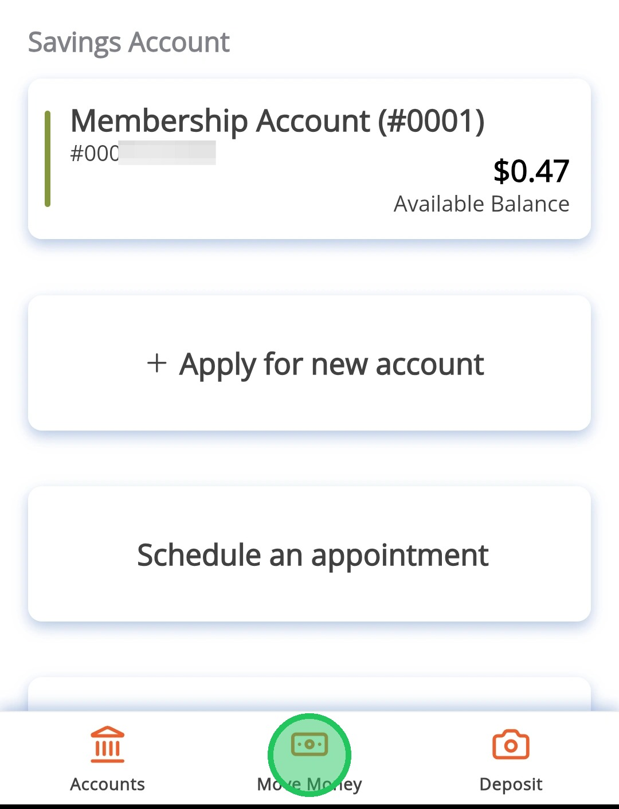
2
Tap "External Transfers and Payments"
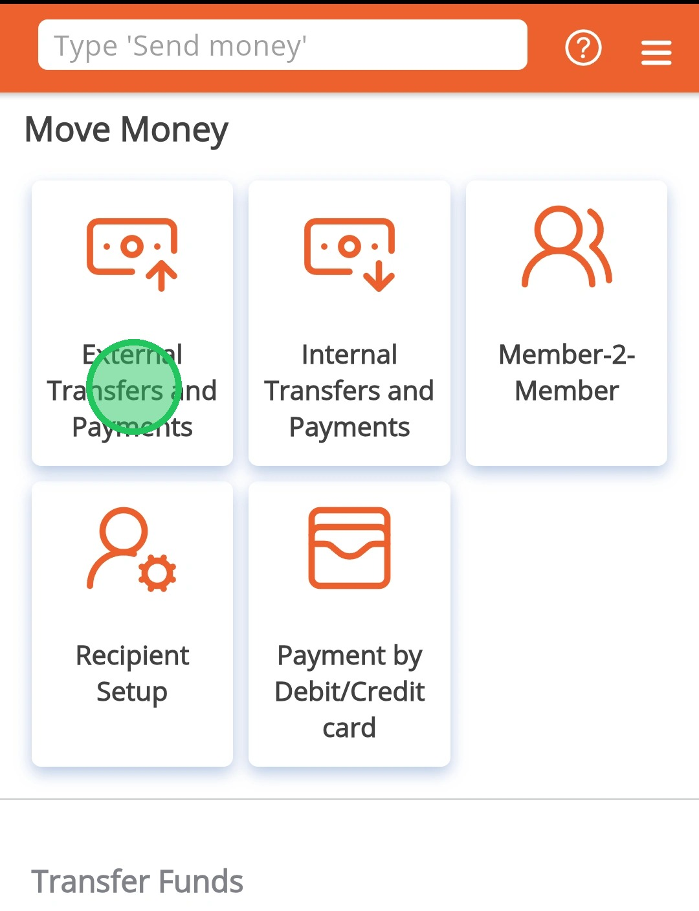
3
Tap "Transfer"
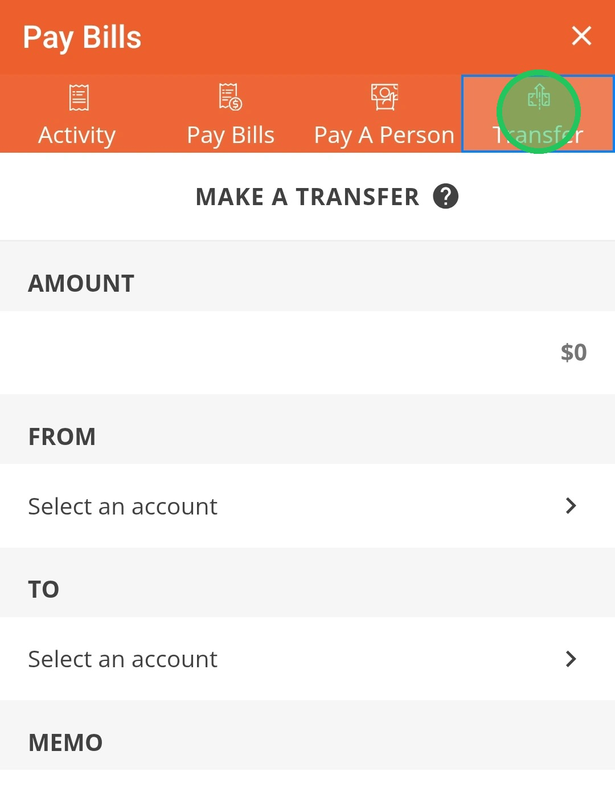
4
Select the "To" box and then "ADD EXTERNAL ACCOUNT"
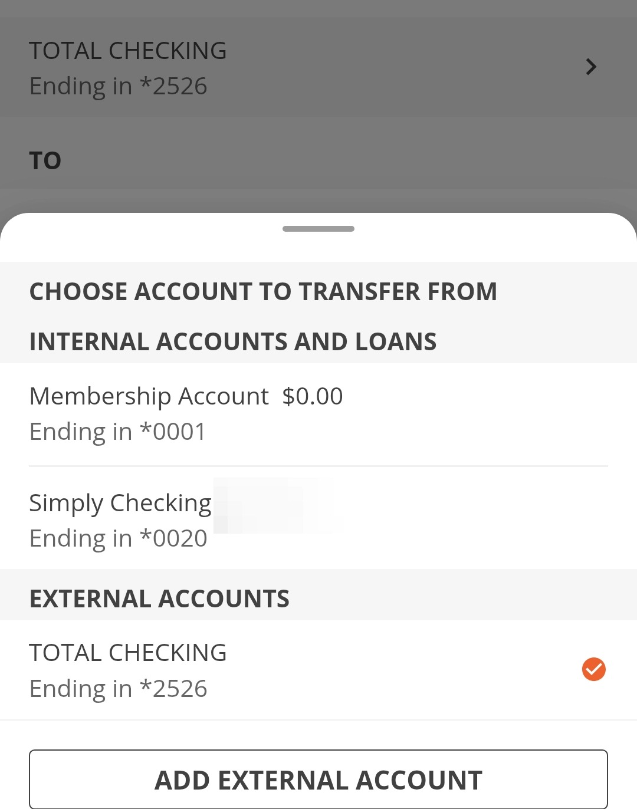
5
Search for the institution's name. Popular institutions are automatically shown.
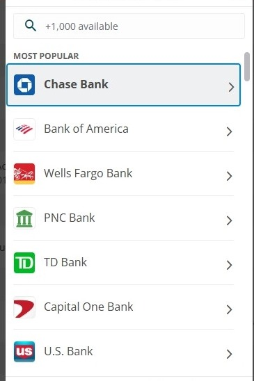
6
You will be prompted to login to your institution to verify
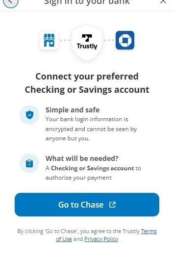
Your newly added External Account will be available to use immediately if you used this method and logged into your other financial institution
7
If you cannot find your institution, then you can enter in the account details manually
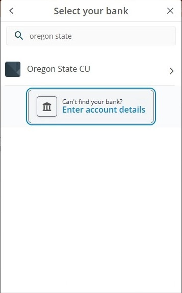
8
Fill out the required information
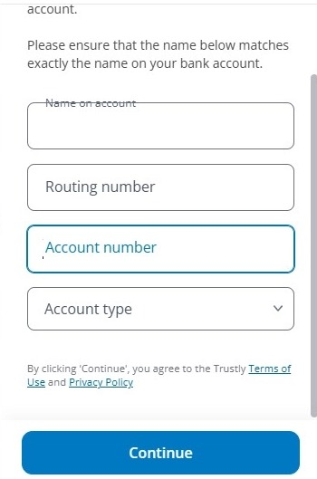
9
Tap 'Continue'
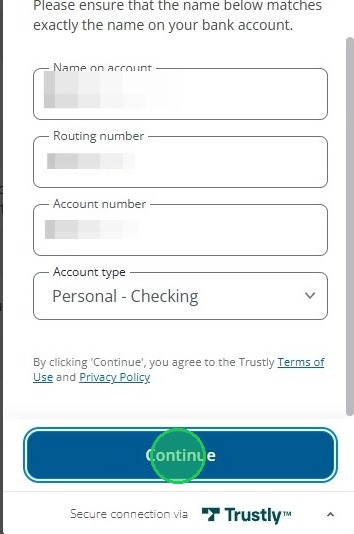
10
A confirmation message will pop up
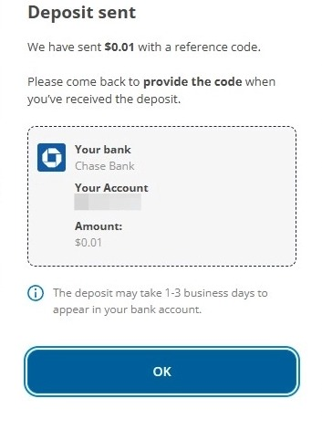
11
A code will be inside the transaction details once the transaction arrives at your other Financial Institution. This may take one to three business days and it is a three or four-digit code and may appear differently than below depending on your Financial Institution.
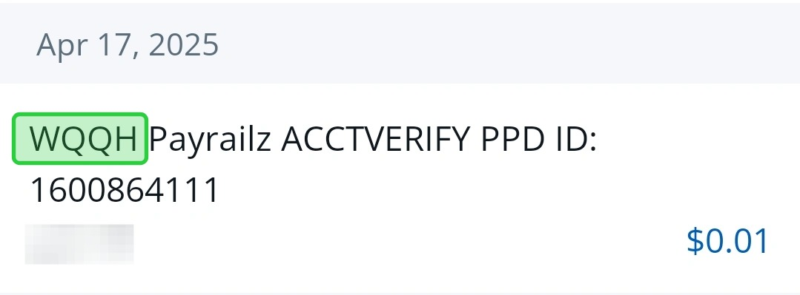
12
You will need to verify this code after it is received. To do this, Tap on "External Transfers & Payments and tap on the three vertical dots next to the question mark while on the "Activity" page
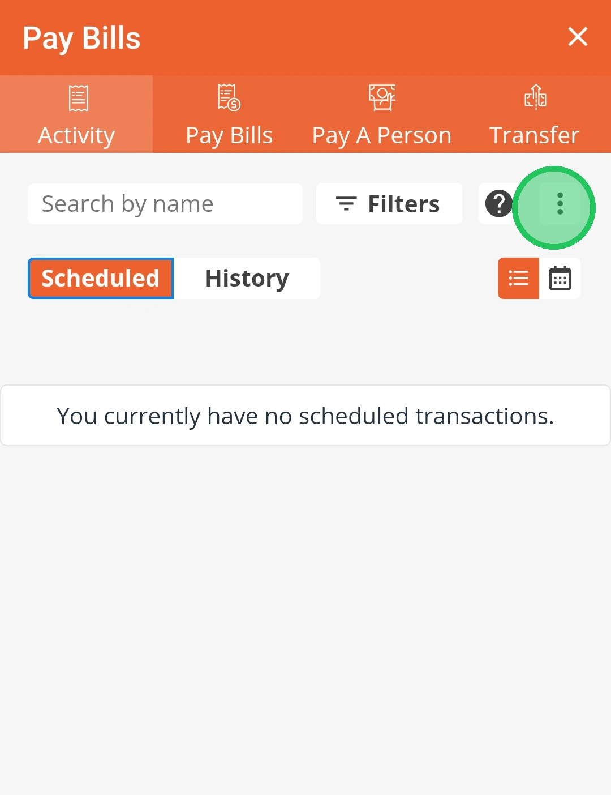
13
Tap on "Transfer"
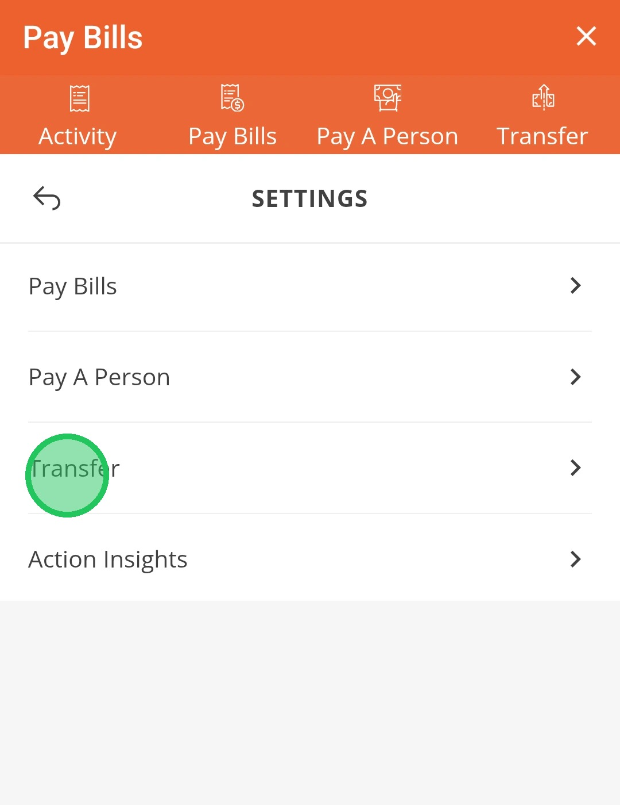
14
Tap on "Manage Accounts"
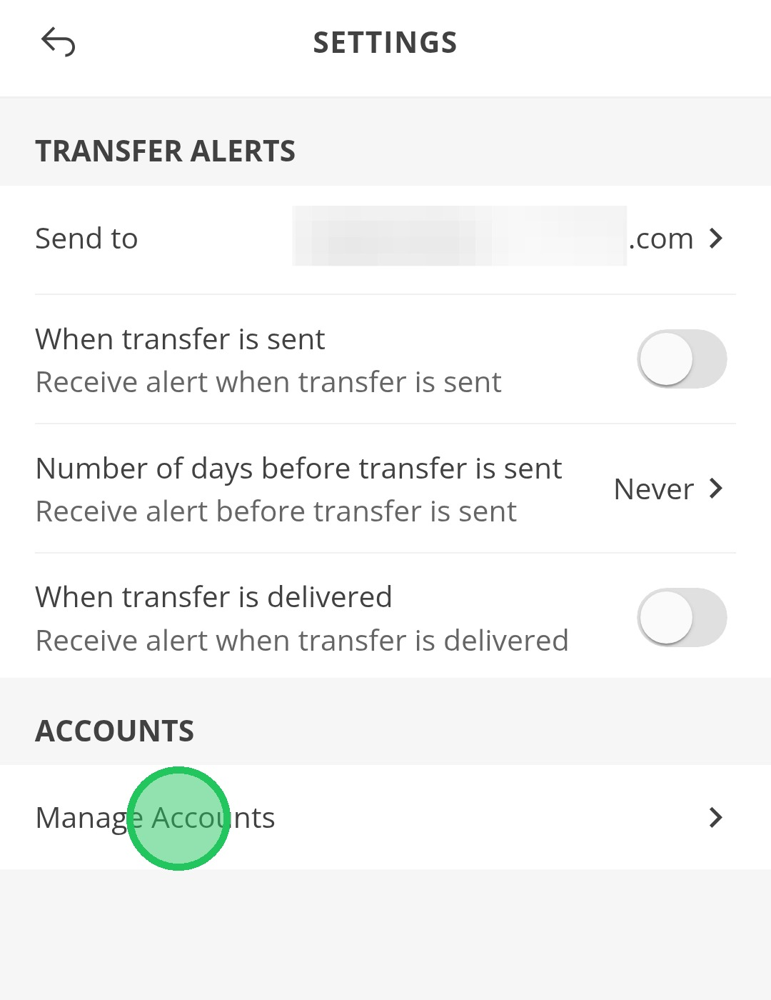
15
At the bottom of this page, you will see the External Account that was added is 'Pending'. Tap "Verify"
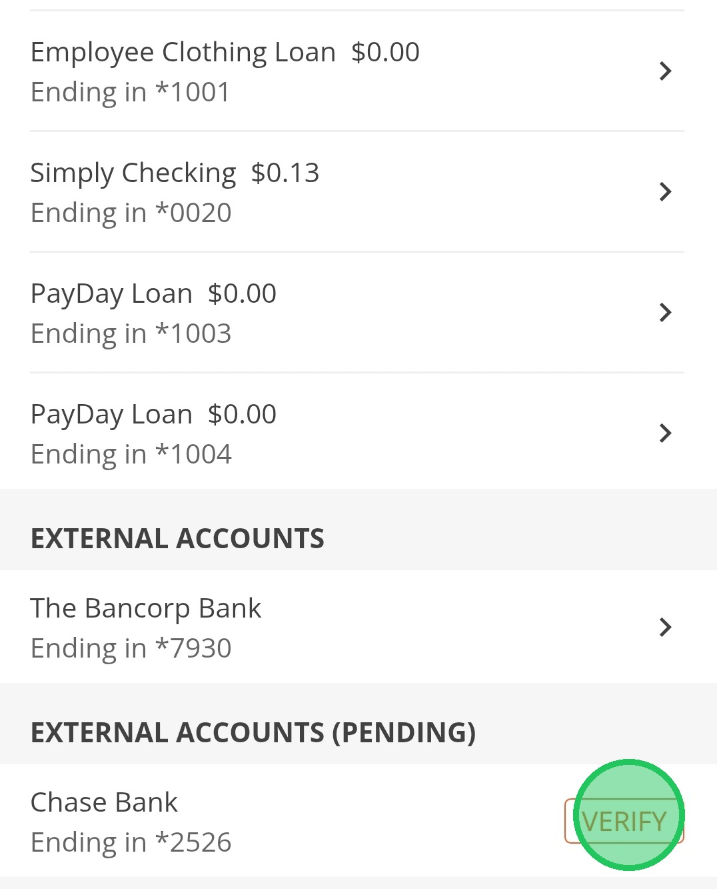
16
This page gives you an example of the code. Tap "Next"
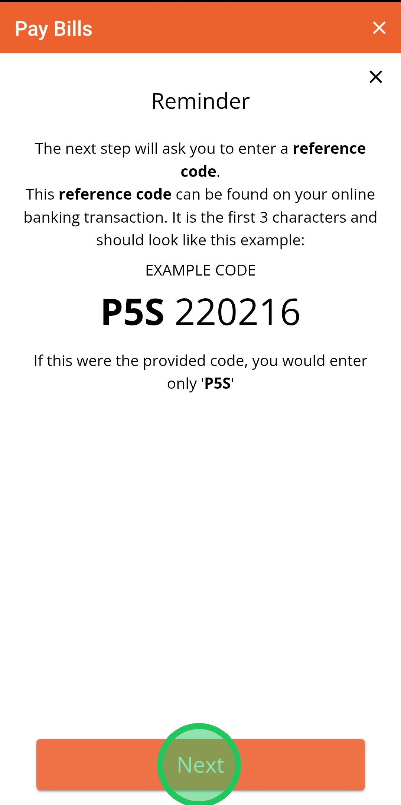
17
Enter your code and hit "Continue" to finish
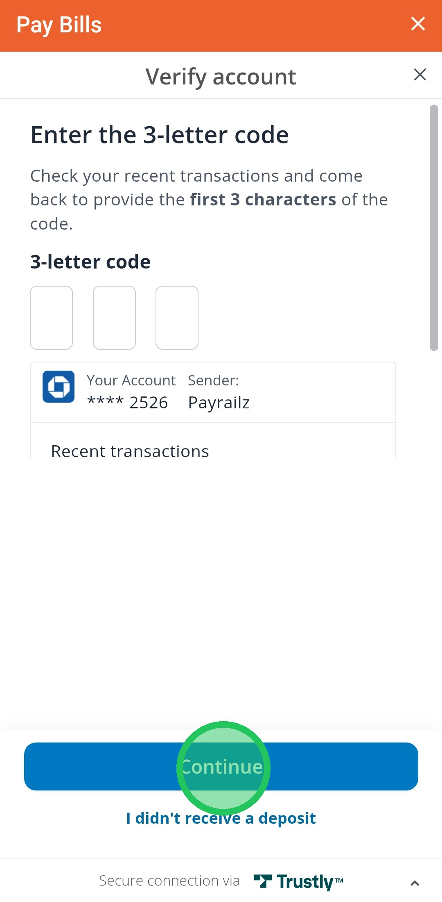